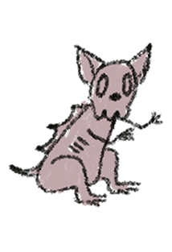

The Chupacabra, a legendary creature steeped in folklore, is said to be a blood-sucking cryptid that has become a staple of myth and mystery, particularly in Latin American and Puerto Rican cultures. Its name, which translates to "goat-sucker" in Spanish, reflects its supposed penchant for attacking and draining the blood of livestock, especially goats. Descriptions of the Chupacabra vary, but common traits include a reptilian or alien appearance, sharp spines or quills along its back, and glowing red eyes. Reports of Chupacabra encounters often involve the discovery of exsanguinated animals, fueling speculation and fear. Skeptics attribute these incidents to predation by common predators or diseases, while others maintain that the Chupacabra is a real, though unidentified, creature. Regardless of its existence, the Chupacabra remains a captivating element of cryptozoology, weaving a tapestry of mystery and intrigue that continues to capture the imaginations of those fascinated by the unknown.
